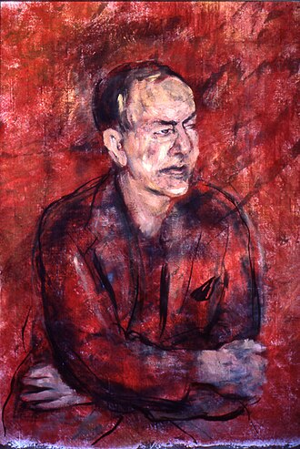
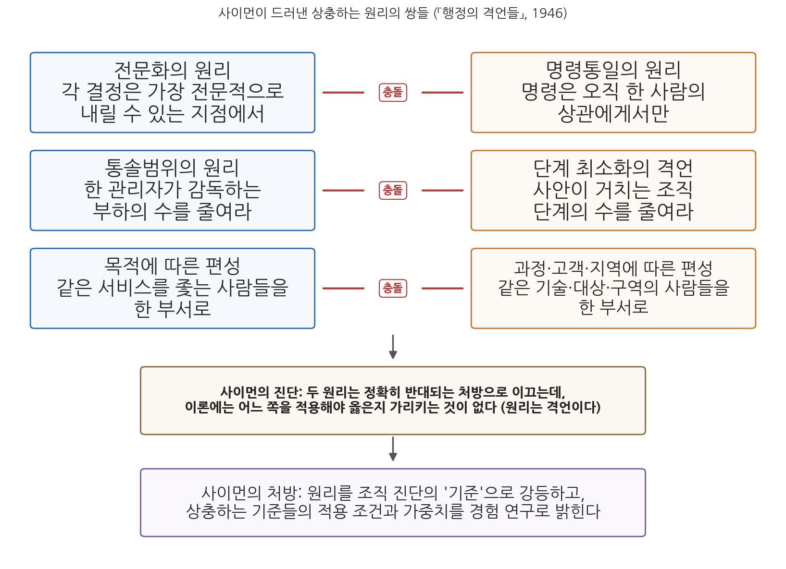

10주차 2차시. 관료제 다시 보기 (2): 사이먼의 행정의 격언들
최종 수정: 2026-08-13 · 이 교재는 학기 중에도 계속 업데이트됩니다
"기술(art)"이라도 "격언" 위에 세울 수는 없다. (허버트 사이먼, 「행정의 격언들」)
이 장에서 배우는 것
어느 시청이 조직 진단을 위해 두 컨설팅 회사에 보고서를 의뢰했다고 하자. 첫 번째 보고서는 이렇게 권고한다. "시장에게 직접 보고하는 부서장이 너무 많습니다. 통솔범위를 줄이기 위해 중간 관리 직위를 신설하십시오." 두 번째 보고서는 이렇게 권고한다. "결재 단계가 너무 많아 처리가 지연됩니다. 중간 관리 직위를 폐지해 조직 단계를 줄이십시오." 두 보고서 모두 교과서에 실린 어엿한 "행정의 원리"를 인용하고 있고, 문장도 논리적이다. 그런데 처방은 정반대다. 어느 쪽을 따라야 하는가. 그리고 그것을 판정해 줄 이론이 행정학에 있기는 한가.
1946년, 서른 살의 젊은 학자 허버트 사이먼(Herbert A. Simon)이 학술지 『퍼블릭 애드미니스트레이션 리뷰(Public Administration Review)』에 실은 논문 「행정의 격언들(The Proverbs of Administration)」은 바로 이 급소를 찔렀다. 9주차에서 우리는 루서 귤릭이 분업과 조정의 원리들을 POSDCORB로 집대성하는 장면을 보았다. 당시 행정학은 이런 원리들을 축적해 "행정의 과학"을 세워 가고 있다고 자부했다. 사이먼의 논문은 그 자부심의 한복판에 떨어진 폭탄이었다. 그가 보기에 행정의 원리들은 과학의 법칙이 아니라 속담, 곧 격언이었다. "돌다리도 두들겨 보고 건너라"와 "망설이는 자는 실패한다"가 짝을 이루듯, 행정의 원리들도 언제나 서로 모순되는 짝으로 존재하면서 어느 쪽을 적용할지는 말해 주지 않는다는 것이다.
이 장에서 배우는 것은 다음과 같다.
- 사이먼이 누구이며, 1946년 논문이 왜 "행태주의 혁명"의 신호탄으로 불리는지
- 원전 강독: 격언과 이론의 차이, 전문화의 기만적 단순성, 명령통일과 전문화의 충돌, 통솔범위의 딜레마, 단일 목적의 신화
- "원리는 격언에 불과하다"는 비판이 어떤 논증 구조로 짜여 있는지
- 사이먼이 대안으로 제시한 길: 원리에서 기준으로, 그리고 합리성의 한계 연구로
- 이 논쟁이 남긴 유산: 행정학은 과학이 될 수 있는가
이 장은 하나의 질문을 따라 전개된다. "행정의 '원리'들은 왜 과학이 아니라 격언인가, 그리고 격언을 넘어선 행정이론은 어떻게 가능한가?"
2.1 사이먼과 1946년 논문의 충격을 본다 (9주차 귤릭과의 대결 구도) → 2.2 원전을 읽는다 (격언과 이론 → 전문화 → 명령통일 → 통솔범위 → 목적·과정·고객·지역) → 2.3 논증의 구조를 해부한다 (원리에서 기준으로) → 2.4 제한된 합리성으로 가는 길을 확인한다 → 2.5 행정학의 과학화 논쟁이라는 현대적 함의를 짚는다.
2.1 허버트 사이먼과 행태주의 혁명

인물 · 허버트 사이먼(Herbert A. Simon, 1916-2001)미국의 행정학자·인지과학자. 위스콘신 밀워키 출생으로 카네기멜런대학교 교수로 재직했으며, 튜링상(1975)과 노벨경제학상(1978)을 모두 받은 유일한 학자다.
대표 저술: 「행정의 격언들」(1946), 『행정행태론』(1947)
그림: 리처드 라파포트의 초상화, 위키미디어 공용 (CC BY 3.0)
허버트 사이먼(1916-2001)은 20세기 학문의 지도를 통째로 다시 그린 인물이다. 정치학으로 학위를 받았지만 그의 발자국은 행정학, 경영학, 경제학, 인지심리학, 컴퓨터과학에 걸쳐 있다. 의사결정과 문제해결 연구로 인공지능 분야를 개척한 선구자 중 한 사람이었고, 1978년에는 조직 내 의사결정 과정에 대한 연구로 노벨경제학상을 받았다. 행정학의 관점에서 그의 대표작은 1947년의 저서 『행정행태론(Administrative Behavior)』이다. 이 책에서 그는 인간의 합리성이 완전하지 않고 한계에 둘러싸여 있다는 제한된 합리성(bounded rationality) 개념을 제시해, 조직 연구를 "구조의 설계"에서 "의사결정의 분석"으로 옮겨 놓았다.
「행정의 격언들」은 그 책의 예고편이자 선전포고였다. 이 논문이 겨냥한 과녁을 분명히 하자. 9주차에서 읽은 귤릭의 「조직이론에 관한 노트」(1937)는 분업을 조직의 토대로 놓고, 그 위에 조정의 구조를 세우는 원리들, 곧 명령통일, 통솔범위, 목적·과정·고객·지역에 따른 부서 편성을 제시했다. 귤릭과 어윅이 엮은 논문집의 제목은 『행정과학 논집(Papers on the Science of Administration)』이었다. 원리(principles)라는 말과 과학(science)이라는 말이 당당히 함께 쓰이던 시대였다. 브라운로 위원회를 통해 이 원리들은 미국 연방정부 개편의 청사진이 되기도 했다. 요컨대 1930년대의 행정학은 원리의 행정학이었고, 귤릭은 그 정점이었다.
사이먼은 이 원리들을 하나씩 붙잡아 해부한다. 그의 결론은 원리들이 틀렸다는 것이 아니다. 더 아픈 지적이다. 원리들은 반박될 수조차 없다는 것, 그래서 과학이 아니라는 것이다. 모든 상황에서 어떤 처방이든 정당화해 주는 명제는 아무것도 금지하지 않으며, 아무것도 금지하지 않는 명제는 이론이 아니다. 이 비판의 방법론적 바탕에는 검증 가능성을 지식의 기준으로 삼는 당대의 과학철학(논리실증주의)이 있었다. 개념은 관찰 가능한 사실과 대응하도록 조작적으로 정의되어야 하고, 이론은 경험적으로 검증되어야 한다는 태도다. 행정학에서 이런 태도로의 전환을 흔히 행태주의 혁명이라 부르는데, 「행정의 격언들」은 그 혁명의 가장 유명한 포성이다.
격언은 지혜의 축적물이다. 사이먼도 그 점을 부정하지 않는다. 그가 문제 삼는 것은 격언의 내용이 아니라 용법이다. 격언은 이미 내린 결정을 정당화하는 데는 이상적이다. 어떤 결정이든 그것을 지지해 주는 격언을 하나쯤 찾을 수 있기 때문이다. 그러나 바로 그 이유로 격언은 결정을 안내하지 못한다. 서로 반대되는 격언이 늘 함께 있기 때문이다. "원리"라는 근엄한 이름을 단 행정학의 명제들이 실은 이 용법상의 결함을 그대로 공유한다는 것, 그것이 제목에 담긴 도발이다.
2.2 원전 강독: 행정의 격언들
강독 1. 격언과 이론: 무엇이 과학적 명제인가
논문의 서두는 격언 일반에 대한 관찰에서 시작한다.
"격언이 이토록 즐겨 인용되는 데는 이유가 있다. 격언은 거의 언제나 서로 모순되는 짝으로 존재한다. '돌다리도 두들겨 보고 건너라.' 그런데 '망설이는 자는 실패한다.' (…) 이미 일어난 행동을 합리화하거나 이미 내린 결정을 정당화하는 일이라면 격언은 이상적이다. 자기주장에 맞는 격언을, 심지어 정반대의 격언까지도, 찾지 못해 곤란해지는 일은 없기 때문이다. (…) 그러나 격언을 과학적 이론의 토대로 삼으려 하면 사정은 그리 즐겁지 않다. 격언이 표현하는 명제가 모자라서가 아니라, 너무 많은 것을 '증명'해 버리기 때문이다. 과학적 이론은 무엇이 참인지뿐 아니라 무엇이 거짓인지도 말해 주어야 한다. 만약 뉴턴이 '물질의 입자들은 서로 끌어당기거나 밀어낸다'고만 세상에 알렸다면 과학 지식에 보탬이 되지 못했을 것이다. 그의 공헌은 끌림이 작용한다는 사실을 보이고, 그것을 지배하는 정확한 법칙을 공표한 데 있다. (…) 오늘날 행정이론을 이루는 명제들 대부분은 안타깝게도 격언의 이러한 결함을 공유한다. 거의 모든 '원리'마다 똑같이 그럴듯하고 수용 가능한 모순 원리를 하나씩 찾을 수 있다. 짝을 이룬 두 원리는 정확히 반대되는 조직 처방으로 이끄는데, 이론에는 어느 쪽을 적용해야 옳은지 가리키는 것이 없다."
무슨 말인가. 과학적 명제의 자격 요건이 제시되어 있다. 이론은 무엇이 참인지만이 아니라 무엇이 거짓인지도 말해야 한다. 다시 말해 이론은 어떤 관찰과는 양립할 수 없어야 하고, 그래야 검증하고 반박할 수 있다. 뉴턴의 위대함은 "입자들이 서로 끌린다"는 막연한 진술이 아니라, 얼마나 끌리는지를 정확히 계산하게 해 주는 법칙을 내놓아 그 법칙이 틀릴 수 있는 위험을 감수한 데 있다. 반면 모순되는 짝과 함께 다니는 격언은 어떤 결과가 나와도 살아남는다. 조심해서 성공하면 돌다리 격언이 옳았던 것이고, 조심하다 기회를 놓치면 망설임 격언이 옳았던 것이다.
왜 중요한가. 이 잣대가 논문 전체의 칼이다. 사이먼은 이어지는 지면에서 행정의 대표적 "원리" 네 가지를 이 잣대에 하나씩 올려놓는다. 그가 문헌에서 골라낸 네 원리는 다음과 같다. 첫째, 집단 구성원 사이에 과업을 전문화할수록 행정 효율이 높아진다. 둘째, 구성원을 명확히 규정된 권한의 위계 속에 배열할수록(명령통일) 행정 효율이 높아진다. 셋째, 한 관리자가 직접 감독하는 부하의 수(통솔범위)를 줄일수록 행정 효율이 높아진다. 넷째, 구성원을 목적, 과정, 고객, 지역에 따라 묶을수록 행정 효율이 높아진다. 모두 9주차 귤릭의 강독에서 만난 낯익은 얼굴들이다.
강독 2. 전문화: 기만적 단순성
첫 번째 도마에 오르는 것은 가장 기본처럼 보이는 전문화의 원리다.
"전문화가 늘수록 행정 효율이 높아진다고들 한다. 그렇다면 다음 두 대안 중 어느 쪽이 이 원리의 올바른 적용인가? (1) 간호사를 구역별로 배치하여, 각 구역의 학교 검진, 아동 가정 방문, 결핵 간호를 포함한 모든 간호를 맡긴다. (2) 간호사를 기능별로 배정하여, 학교 검진, 아동 가정 방문, 결핵 간호를 각각 전담시킨다. (…) 두 설계 모두 전문화의 요구를 충족한다. 첫째는 '장소'에 따른 전문화이고, 둘째는 '기능'에 따른 전문화다. 전문화의 원리는 두 대안 사이에서 선택하는 데 아무 도움이 되지 못한다. 전문화 원리의 단순성은 기만적 단순성, 곧 근본적 모호성을 가린 단순성이다. '전문화'는 효율적 행정의 조건이 아니라, 효율적이든 비효율적이든 모든 집단적 노력의 불가피한 특징이기 때문이다. 전문화란 그저 서로 다른 사람들이 서로 다른 일을 한다는 뜻이다. 두 사람이 같은 순간에 같은 장소에서 같은 일을 하기란 물리적으로 불가능하므로, 두 사람은 언제나 다른 일을 하고 있다. 따라서 행정의 진짜 문제는 '전문화할 것인가'가 아니라, 행정 효율로 이어지는 '특정한 방식과 특정한 선'을 따라 전문화하는 일이다."
무슨 말인가. 간호사 사례가 논증의 전부를 담고 있다. 구역별 배치도 전문화(지역 전문화)이고 기능별 배정도 전문화(기능 전문화)이므로, "전문화하라"는 원리는 서로 반대되는 두 설계를 똑같이 축복한다. 아무 대안이나 정당화해 주는 원리는 아무 대안도 골라 주지 못한다. 더 깊은 통찰은 그다음이다. 전문화는 달성해야 할 목표가 아니라 여러 사람이 일하는 모든 조직의 논리적 필연이다. "전문화할수록 효율이 높아진다"를 정직하게 고쳐 쓰면 "효율이 높아지는 방향으로 전문화할수록 효율이 높아진다"는 공허한 동어반복이 된다.
왜 중요한가. 사이먼이 여기서 보여 주는 것은 개별 원리의 오류가 아니라 원리라는 명제 형식 자체의 공허함이다. 진짜 질문은 언제나 "어느 축을 따라, 어느 선에서" 전문화할 것인가라는 선택의 문제인데, 원리는 그 선택 앞에서 침묵한다. 이 논법은 이후의 모든 강독에서 반복된다.
강독 3. 명령통일과 전문화의 긴장: 귤릭과의 정면 대결
두 번째 과녁은 명령통일이다. 여기서 사이먼은 귤릭의 문장을 직접 인용하며 맞선다. 9주차의 주인공이 피고석에 앉는 대목이다.
"부하는, 타인이 내린 결정이 자신의 판단과 무관하게 자신의 행동을 인도하도록 허용할 때 권한(authority)을 수용한다고 말할 수 있다. (…) 명령통일이 행정의 원리라면 모순 명령을 동시에 따를 수 없다는 물리적 불가능성 이상을 주장해야 한다. 아마도, 조직 구성원이 둘 이상의 상관에게서 명령을 받는 위치에 놓여서는 안 된다는 주장일 것이다. 굴릭은 바로 이런 의미로 이 원리를 쓴다. '심지어 경영의 위대한 사상가 테일러조차 기계, 자재, 속도 각각에 대해 개별 작업자에게 직접 명령을 내릴 감독자를 따로 세우는 오류에 빠졌다. 명령통일의 원리를 엄격히 고수하는 데 어떤 우스꽝스러움이 따를 수는 있지만, 그것은 이 원리를 어길 때 생기는 혼란, 비효율, 책임 회피의 확실성에 비하면 중요하지 않다.' (…) 그러나 이 원리의 진짜 결함은 전문화의 원리와 양립할 수 없다는 점이다. 조직에서 권한이 쓰이는 가장 중요한 용도 가운데 하나는 '결정'의 전문화를 이루어, 각 결정이 가장 전문적으로 내릴 수 있는 지점에서 이루어지게 하는 것이다. 개별 소방관이 2인치 호스를 쓸지 소화기를 쓸지 스스로 결정하지 않는다. 그 결정은 장교들이 내리고, 명령의 형태로 그에게 전달된다. 그런데 굴릭의 의미에서 명령통일이 지켜진다면, 위계의 어느 지점에 있는 사람의 결정이든 오직 하나의 권한 채널을 통해서만 영향을 받는다. 교육청의 회계담당이 교육전문가의 지휘 아래 있고 명령통일이 지켜진다면, 재무부서는 그의 업무의 회계적 측면에 대해 직접 명령을 내릴 수 없다. (…) 명령통일도 전문화도 이 쟁점을 판정해 주지 못한다. 둘은 서로 모순될 뿐이고, 그 모순을 푸는 절차를 제시하지 않는다."
무슨 말인가. 논증은 세 걸음으로 나아간다. 첫걸음, 사이먼은 권한을 조작적으로 정의한다. 권한은 조직도의 선이 아니라, 부하가 타인의 결정을 자기 판단보다 앞세워 받아들이는 관찰 가능한 행동이다. 둘째 걸음, 이 정의로 보면 권한의 가장 중요한 쓸모는 결정의 전문화다. 소방관의 예처럼, 각 결정을 그 결정에 가장 전문성이 있는 지점에서 내리게 하고 명령으로 전달하면, 모든 현장 직원이 모든 것을 스스로 판단할 때보다 훨씬 전문적인 의사결정이 가능해진다. 셋째 걸음, 그렇다면 전문화와 명령통일은 정면으로 충돌한다. 결정의 전문성을 살리려면 회계 문제는 재무부서가, 교육 문제는 교육전문가가 지휘해야 하는데, 그러면 부하는 둘 이상의 상관을 갖게 되어 명령통일이 깨진다. 명령통일을 지키면 전문성이 하나의 채널에 갇힌다.
왜 중요한가. 사이먼은 실제 행정에서 권한이 이미 영역별로 구획화(zoning)되어 있으며, 귤릭이 말하는 의미의 명령통일은 "어떤 행정조직에서도 한 번도 존재한 적이 없다"고까지 말한다. 흥미로운 것은 귤릭이 "오류"라고 단죄했던 테일러의 기능별 감독제가 여기서 복권된다는 점이다. 사이먼이 보기에 라인 관리자가 회계부의 규정에 복속되는 현실은 테일러의 권고와 원리상 다르지 않다. 문제를 판정하려면 두 노선의 이점을 저울질하게 해 주는 이론이 필요한데, 귤릭의 원리도, 그 반대의 원리도 저울이 되어 주지 못한다. 우리는 저명한 사상가들 사이에서 선택해야 하지만 선택을 뒷받침할 근거가 없다는 것, 이것이 "원리 행정학"의 실상이라는 것이다.
강독 4. 통솔범위의 딜레마: 최적점은 어디인가
세 번째 과녁은 9주차에서 귤릭이 "냉엄한 인간 한계"라고 불렀던 통솔범위다.
"통솔범위는 좁아야 한다는 생각은 세 번째의 '논란의 여지 없는' 원리로 자신 있게 주장된다. (…) 덜 알려진 사실은, 그에 상반되는 행정 격언도 제시될 수 있다는 점이다. '어떤 사안이 처리되기까지 거쳐야 하는 조직 단계의 수를 최소화할수록 행정 효율이 높아진다.' (…) 딜레마는 이렇다. 구성원 사이의 상호관계가 복잡한 대규모 조직에서 통솔범위를 좁히면, 구성원 간의 접촉이 공통 상관이 나올 때까지 위로 보고되어야 하므로 필연적으로 과도한 절차(레드 테이프)가 생긴다. 조직이 조금만 커도 모든 사안이 여러 단계의 관리를 거쳐 올라가 결정되고, 다시 지시와 명령의 형태로 내려와야 한다. 번거롭고 시간이 많이 드는 과정이다. 대안은 각 관리자 아래의 인원을 늘려 조직 피라미드가 더 빨리 정점에 이르게 하는 것이다. 그러나 그러면 또 다른 어려움이 생긴다. 한 관리자가 너무 많은 직원을 감독해야 하면 통제력이 약해진다. 통솔범위를 늘려도 줄여도 바람직하지 않은 귀결이 따른다면, 최적점은 어디인가? 제한된 통솔범위를 주장하는 이들은 적정 숫자로 3, 5, 심지어 11까지 제시했지만, 왜 하필 그 수인지에 대한 설명은 어디에도 없다. 원리 자체는 바로 이 중대한 질문에 아무 빛도 비추지 못한다."
무슨 말인가. 이 장 서두의 두 컨설팅 보고서가 바로 이 대목의 재연이다. 실제로 사이먼은 원전에서 같은 소규모 보건부를 놓고 쓴 두 개의 가상 진단서를 나란히 제시한다. 하나는 "보건담당관에게 11명이 직접 보고하니 의료담당관과 수석검사원과 수간호사를 두어 통솔범위를 줄이라"고 권고하고, 다른 하나는 "불필요한 감독 단계가 끼어 있으니 수석검사원과 수간호사 직위를 폐지해 단계를 줄이라"고 권고한다. 같은 조직, 같은 사실을 놓고 두 "원리"가 정반대의 개편안을 낳는 것이다. 통솔범위를 좁히면 위계가 깊어져 절차가 늘고, 위계를 얕게 하면 통솔범위가 넓어져 감독이 약해진다. 진짜 문제는 이 상충하는 손익 사이의 최적점인데, 원리는 그 최적점에 대해 아무 말도 하지 않는다. 3명이든 11명이든, 제시된 적정 숫자에 근거가 있었던 적도 없다.
왜 중요한가. 앞의 두 강독이 원리들 사이의 모순을 보였다면, 이 강독은 모순이 실무 처방의 수준에서 얼마나 구체적으로 드러나는지 보여 준다. 조직 개편 보고서가 어느 원리를 인용하느냐는 논리의 문제가 아니라 사실상 선택의 문제였던 셈이다. 아울러 여기서 레드테이프가 다시 등장하는 것도 눈여겨보자. 1차시에서 머튼은 레드테이프를 정서와 규칙 애착의 산물로 설명했는데, 사이먼은 같은 현상을 조직 설계의 기하학, 곧 좁은 통솔범위가 강제하는 깊은 위계의 산물로도 설명할 수 있음을 보여 준다.
강독 5. 단일 목적의 신화: 목적·과정·고객·지역
마지막 과녁은 부서 편성의 네 기준이다. 여기서 사이먼의 분석은 언어 비판의 수준까지 내려간다.
"목적, 과정, 고객, 지역은 서로 경쟁하는 조직 편성의 기준이므로, 어느 지점에서든 하나의 이점을 얻으려면 나머지 셋의 이점을 희생해야 한다. (…) 게다가 들여다보면 이 핵심 용어들의 의미 자체에 근본적 모호성이 있다. 타자수는 편지를 재생산하기 위해 타자를 치고, 편지의 재생산은 문의에 답하기 위해 이루어진다. '편지 쓰기'는 타자가 수행되는 목적이면서, 동시에 '문의에 답하기'라는 목적을 이루는 과정이다. 같은 활동이 목적으로도 과정으로도 묘사될 수 있는 것이다. (…) 산림청은 '산림보존'이라는 목적 조직이자, '산림관리'라는 과정 조직이자, '공공림을 이용하는 제재업자와 축산업자'라는 고객 조직이자, '공유림'이라는 지역 조직으로 볼 수 있다. (…) 결론은 이렇다. '단일 목적' 같은 것은 없고, '단일 목적 조직' 같은 것도 없다. 무엇을 '단일 기능'으로 볼지는 전적으로 언어와 기술에 달려 있다. 화재방지는 하나의 '단일 목적'인가, 아니면 '공공안전'이라는 더 큰 목적의 일부인가. 두 하위 목적을 포괄하는 단어가 언어에 있으면 우리는 그 둘을 하나의 목적으로 생각하기 쉽고, 그런 단어가 없으면 두 하위 목적은 각각 독립된 목적이 된다."
무슨 말인가. "부서는 목적에 따라 편성하라"는 처방이 성립하려면 최소한 어떤 조직이 목적 조직인지 판별할 수 있어야 한다. 그런데 타자수의 예가 보여 주듯 목적과 과정은 별개의 실체가 아니라 수단-목표 위계의 상대적 위치일 뿐이다. 모든 활동은 아래에서 보면 목적이고 위에서 보면 과정이다. 산림청 하나가 관점에 따라 목적·과정·고객·지역 조직 모두로 분류되는 마당에, "목적에 따라 조직하라"는 처방은 적용 대상조차 특정할 수 없다. 사이먼은 이 혼란 위에서 벌어지는 실제 논쟁의 비논리도 꼬집는다. 농업교육을 교육부에 두느냐 농업부에 두느냐를 놓고 "답은 자명하다"고 단언하는 속설에 대해, 그는 유능한 전문가들로 꾸려진 농업교육국이라면 어느 부에 속하든 "새 농법을 새 방법으로" 가르치려 할 것이라며, 소속 변경이 업무의 질을 바꾼다는 믿음은 부서 재편의 효능에 대한 "다소 신비주의적 신념"일 뿐이라고 답한다.
왜 중요한가. 이 강독은 조직 개편론의 급소를 찌른다. 어느 부처에 어느 기능을 붙일 것인가는 지금도 정부 개편 때마다 반복되는 논쟁인데, 사이먼의 분석은 그 논쟁의 상당수가 "본질적으로 목적 조직인가"라는 답 없는 질문 위에서, 소속만 바꾸면 성과가 달라진다는 검증되지 않은 전제를 깔고 진행됨을 경고한다. 판정에 필요한 것은 명칭의 논리가 아니라, 개편이 실제 의사결정의 배분을 어떻게 바꾸는지에 대한 증거다.
2.3 "원리는 격언에 불과하다": 논증의 구조
네 원리의 해부가 끝났다. 사이먼의 표현으로 "넷 중 어느 것도 좋은 상태로 살아남지 못했다." 각각에서 발견된 것은 명백한 원리가 아니라, 행정 상황에 똑같이 적용될 수 있으면서 서로 양립할 수 없는 원리들의 집합이었다. 그림 10-2가 이 대결 구도를 정리한다.

그림 10-2를 읽는 법. 위쪽 세 줄은 원전에서 확인한 세 개의 충돌 쌍이다. 결정의 전문화는 복수의 권한 채널을 요구하므로 명령통일과 충돌하고, 통솔범위 축소는 위계를 깊게 만들므로 단계 최소화와 충돌하며, 목적·과정·고객·지역은 하나를 얻으면 나머지를 잃는 경쟁 기준들이다. 가운데 상자가 사이먼의 진단, 곧 어느 쪽을 적용할지 이론이 말해 주지 못한다는 격언 판정이고, 아래 상자가 그의 처방이다. 이 그림에서 알 수 있는 것은 사이먼의 비판이 개별 원리의 반박이 아니라 쌍(pair) 찾기라는 하나의 방법을 반복 적용한 결과라는 점이다. 어떤 "원리"를 만나든 그와 상충하는 똑같이 그럴듯한 원리를 찾아낼 수 있다면, 그 원리는 격언이다.
그렇다면 원리들은 전부 폐기물인가. 사이먼의 대답은 뜻밖에도 관대하다.
"행정이론의 구성에 유익하도록 건질 수 있는 것이 있는가? 사실 거의 모든 것을 건질 수 있다. 어려움은 '행정의 원리들'로 취급되어 온 것들의 상당수가 실은 행정 상황을 묘사하고 진단하는 '기준(criteria)'일 뿐이라는 데서 비롯된다. 옷장 공간은 성공적인 주택 설계에서 확실히 중요한 항목이다. 그러나 다른 모든 고려를 잊은 채 '최대의 옷장 공간 확보'만을 겨냥해 설계된 집은, 좋게 말해도 '다소 균형 잡히지 않은' 집으로 여겨질 것이다. 마찬가지로 명령통일, 목적에 따른 전문화, 분권화는 모두 효율적 행정조직의 설계에서 고려해야 할 항목들이다. 그러나 이 항목들 가운데 어느 하나도 행정분석가의 유일한 지침 원리가 될 만큼 중요하지는 않다. (…) 상호 양립할 수 없는 이점들은, 건축가가 추가 옷장 공간과 더 넓은 거실의 장점을 저울질하듯, 서로 맞바꾸어 가며 균형을 찾아야 한다."
무슨 말인가. 원리의 내용은 살아남는다. 다만 지위가 강등된다. 원리는 언제나 따라야 할 법칙이 아니라, 설계에서 고려할 여러 항목 중 하나, 곧 기준이다. 옷장 비유가 강등의 의미를 정확히 전달한다. "옷장 공간을 확보하라"는 좋은 조언이지만, 그것만 따라 집을 지으면 괴물이 나온다. 좋은 설계는 하나의 기준의 극대화가 아니라 상충하는 기준들 사이의 저울질이다. 사이먼은 이로부터 행정 연구의 타당한 접근을 도출한다. 관련된 진단 기준을 모두 식별하고, 각 행정 상황을 그 기준들 전체의 관점에서 분석하며, 기준들이 충돌할 때 각각에 어떤 가중치를 줄지 연구하는 것이다. 그리고 그 가중치는 안락의자에서 사변으로 정할 수 없고, 목표를 측정 가능하게 정의하고 교란 요인을 통제한 경험 연구와 실험으로만 정할 수 있다고 못 박는다.
왜 중요한가. 이 대목이 없으면 사이먼의 논문은 파괴 작업에 그친다. 이 대목이 있기에 논문은 연구 프로그램의 선언이 된다. 사이먼 스스로 이 재구성이 "현재의 많은 행정학 저술에 대한 기소장"이 된다고 썼다. 단 하나의 기준을 골라 적용하고 권고를 도출하면서, 똑같이 유효한 상충 기준을 편리하게 무시하는 분석 관행 전체가 피고인 것이다.
"원리는 격언에 불과하다"는 문장만 기억하면 사이먼이 귤릭의 유산을 전부 내다 버렸다고 오해하기 쉽다. 원전의 표현은 반대다. "거의 모든 것을 건질 수 있다." 전문화도 명령통일도 통솔범위도 조직 진단의 기준으로서는 유효하다. 버려지는 것은 원리라는 이름, 곧 조건 없이 타당한 법칙이라는 주장뿐이다. 실제로 사이먼은 귤릭, 월리스, 벤슨 등의 후기 문헌에서 이미 강조점이 "원리 그 자체"에서 "서로 경쟁하는 원리들이 각각 적용되는 조건"의 연구로 이동해 왔다고 지적한다. 비판받은 진영도 같은 방향으로 움직이고 있었던 셈이다.
2.4 제한된 합리성으로 가는 길
기준들에 가중치를 주려면 무엇을 연구해야 하는가. 논문의 후반부에서 사이먼은 훗날 그의 이름과 동의어가 될 개념의 밑그림을 그린다. 출발점은 효율성이다. 같은 지출이라면 목표 성취가 가장 큰 대안을, 같은 성취라면 지출이 가장 적은 대안을 택하라는 효율성의 원리는 얼핏 또 하나의 격언처럼 보이지만, 사이먼은 이것을 원리가 아니라 정의로 규정한다. 그것은 "좋은 행정"이 무엇을 뜻하는지 정해 줄 뿐, 어떻게 달성하는지는 말해 주지 않는다. 그 "어떻게"를 밝히는 것이 이론의 몫이다. 여기서 사이먼은 유명한 비유를 내놓는다. 경제이론에 합리적으로 효용을 극대화하는 "경제적 인간(economic man)"이 있듯, 행정이론에는 부족한 수단으로 목표 성취를 극대화하려는 "행정적 인간(administrative man)"이 자리 잡는다.
그렇다면 행정이론의 연구 대상은 무엇인가. 행정적 인간이 실제로 부딪히는 한계들이다.
"동일한 기술, 동일한 목표와 가치, 동일한 지식과 정보를 가진 두 사람이라면 합리적으로 동일한 행동 방안에 이를 수밖에 없다. 따라서 행정이론은 조직 구성원이 어떤 기술과 가치와 지식을 가지고 일을 시작하게 되는지를 결정하는 요인들에 관심을 가져야 한다. 이것이 바로 행정의 원리가 상대해야 할 '합리성의 한계'다. 한편에서 개인은 의식의 영역 바깥에 있는 기술, 습관, 반사에 의해 제한된다. (…) 둘째로 개인은 자신의 가치와, 결정에 영향을 미치는 목적 개념에 의해 제한된다. 조직에 대한 충성이 부족하면 개인적 동기가 행정 효율을 방해할 수 있고, 충성이 자신이 속한 국(局)에 매여 있으면 더 큰 단위에 해로운 결정을 내릴 수도 있다. (…) 셋째로 개인은 자신의 업무와 관련된 지식의 범위에 의해 제한된다. 인간의 마음이 축적하고 적용할 수 있는 지식의 양에는 어떤 한계가 있는가? 의사소통 체계는 지식과 정보를 적절한 의사결정 지점으로 어떻게 흘려보내야 하는가? 이 영역은 아마 행정이론의 '미지의 땅(terra incognita)'일 것이며, 이곳을 면밀히 탐색하면 행정 격언들의 올바른 적용에 큰 빛이 비칠 것이다."
무슨 말인가. 완전한 합리성이 가능하다면 조직 설계는 사소한 문제가 된다. 모두가 모든 것을 알고 조직 전체에 충성한다면 누가 어디서 결정하든 같은 결정이 나오기 때문이다. 조직의 형태가 중요해지는 이유는 정확히 인간의 합리성이 세 방향에서 제한되어 있기 때문이다. 몸에 밴 기술과 습관의 한계, 가치와 충성의 한계, 그리고 지식과 정보의 한계다. 조직이란 이 한계들을 관리하는 장치이며, 행정이론의 진짜 연구 대상은 규칙이나 조직도가 아니라 이 한계들 아래에서 이루어지는 의사결정이다. 사이먼은 이 한계가 고정불변이 아니라 훈련과 자각으로 움직일 수 있는 "변하는 한계"라는 점도 덧붙인다.
왜 중요한가. 이 세 가지 한계의 목록이 이듬해 『행정행태론』에서 체계화될 제한된 합리성 개념의 원형이다. 인간은 모든 대안을 알지도, 모든 결과를 계산하지도 못하는 존재이며, 그래서 최선의 대안이 아니라 그런대로 만족스러운 대안을 찾는 데서 멈춘다(사이먼이 훗날 만족화라고 부르게 되는 행동이다). 행정학의 무게중심이 "올바른 구조의 원리"에서 "제한된 합리성 아래의 의사결정"으로 옮겨 가는 순간이며, 이 전환은 조직이론과 정책연구만이 아니라 훗날 행동경제학과 인공지능 연구로까지 이어지는 긴 지적 계보의 출발점이 된다. 12주차에 읽을 린드블롬의 점증주의도 이 문제의식, 곧 총체적 합리성의 비현실성에서 출발한다.
제한된 합리성(bounded rationality)은 인간의 합리성이 기술과 습관, 가치와 충성, 지식과 정보라는 한계에 둘러싸여 있어, 완전한 합리적 극대화가 아니라 한계 안에서의 의사결정만이 가능하다는 사이먼의 핵심 개념이다. 「행정의 격언들」(1946)에서 "합리성의 한계"로 처음 윤곽이 그려졌고, 『행정행태론』(1947)에서 본격적으로 전개되었다.
2.5 현대적 함의: 행정학의 과학화 논쟁
「행정의 격언들」이 남긴 유산은 세 갈래로 정리할 수 있다.
첫째, 행정학의 방법론적 기준을 바꾸어 놓았다. 개념은 조작적으로 정의하고, 주장은 검증 가능하게 진술하고, 처방은 경험적 증거 위에 세우라는 요구는 이후 행정학과 조직연구의 기본 규율이 되었다. 오늘날 우리에게 익숙한 증거기반 정책, 곧 직관과 관행이 아니라 데이터와 분석 위에서 정책을 설계하고 평가하자는 흐름은 이 요구의 후예다. 사이먼이 지적한 병폐도 그대로 살아 있다. 그는 기관이 설치되었다가 몇 년 뒤 폐지된 역사를 두고 그것이 "행정 실험"이었다고 말할 수 없으며, 그런 "실험"들은 웅변가에게 탄약을 줄 뿐 연구자에게 증거를 주지 못한다고 썼다. 통제도 성과 측정도 없이 시행되고 평가되는 정책은 지금도 드물지 않다.
둘째, 행정학은 과학이 될 수 있는가라는 논쟁에 불을 붙였다. 사이먼은 논문 말미에서 "행정은 과학의 반열을 바랄 수 없고 기껏해야 기술(art)에 불과하다"는 반론을 스스로 소환한 뒤, 이 장의 도입 인용구로 답한다. 행정의 원리가 얼마나 정밀해질 수 있는지는 경험만이 답할 문제이지만, 원리가 논리적이어야 한다는 데는 논쟁의 여지가 없으며, 기술이라도 격언 위에 세울 수는 없다는 것이다. 그러나 반대편의 목소리도 만만치 않았다. 행정은 가치와 정치의 세계에 속하며, 사실과 가치를 갈라 사실만 과학으로 다루려는 시도 자체가 행정의 본질을 놓친다는 비판이다. 그 비판의 대표자가 바로 11주차에서 읽을 드와이트 왈도이며, 사이먼과 왈도는 1950년대 초 학술지 지면에서 날 선 논쟁을 주고받았다. 행정학이 엄밀성을 좇는 과학이어야 하는지, 가치를 다루는 실천적 학문이어야 하는지를 둘러싼 이 긴장은 오늘까지도 행정학의 정체성 논쟁으로 이어지고 있다.
셋째, 조직 개편이라는 실무 영역에 지금도 유효한 검문소를 세웠다. 정부가 바뀔 때마다 부처를 합치고 나누는 개편안이 등장하고, 개편안마다 "기능 중심 재편", "수요자 중심 조직" 같은 원리의 언어가 동원된다. 사이먼의 분석은 이런 논쟁에 세 가지 질문을 들이댄다. 그 "기능"과 "수요자"는 판별 가능하게 정의되어 있는가(단일 목적의 신화). 인용된 원리와 상충하는, 똑같이 그럴듯한 원리는 검토되었는가(격언 판정). 소속 변경이 실제 의사결정의 배분을 어떻게 바꾸는지에 대한 증거가 있는가(부서 재편의 신비주의). 세 질문을 통과하지 못하는 개편론은, 사이먼의 표현을 빌리면, 결정을 안내하는 이론이 아니라 이미 내린 결정을 정당화하는 격언의 인용이다.
끝으로 이 장을 1차시와 겹쳐 놓자. 머튼과 사이먼은 같은 해 전후에, 서로 다른 학문에서, 같은 과녁을 쏘았다. 고전이론이 그린 "설계된 대로 작동하는 조직"이라는 그림이다. 머튼은 그 그림에서 사람의 정서와 구조의 역기능이 지워져 있음을 보였고, 사이먼은 그 그림을 떠받치는 원리들이 논리적으로 공허함을 보였다. 하나는 사회학적 해부이고 하나는 논리적 해부이지만, 결론은 같은 곳을 가리킨다. 행정학은 규범과 처방을 잠시 내려놓고, 조직 안에서 실제로 일어나는 일을 관찰하고 설명하는 데서 다시 시작해야 한다는 것이다. 3부의 나머지 장들은 이 재출발이 낳은 서로 다른 갈래들이다.
요약
1946년 허버트 사이먼의 「행정의 격언들」은 귤릭으로 대표되는 원리 행정학에 대한 정면 공격이었다. 사이먼의 잣대는 과학적 이론의 요건이다. 이론은 무엇이 참인지만이 아니라 무엇이 거짓인지도 말해야 하는데, 행정의 원리들은 격언처럼 서로 모순되는 짝으로 존재하며 어느 쪽을 적용할지 말해 주지 않는다. 전문화의 원리는 모든 조직 설계가 어차피 어떤 방식으로든 전문화라는 점에서 기만적 단순성에 불과하고(간호사 사례), 명령통일은 결정을 가장 전문적인 지점에서 내리게 하려는 전문화의 요구와 정면으로 충돌하며(소방관과 교육청 회계담당 사례), 통솔범위 축소는 조직 단계 최소화라는 상반 격언과 충돌하면서 최적점에 대해 침묵하고(보건부의 두 개편안), 목적·과정·고객·지역은 같은 조직이 관점에 따라 네 범주 모두로 분류될 만큼 모호하다(산림청 사례, 단일 목적의 신화). 사이먼의 처방은 원리의 폐기가 아니라 강등이다. 원리들은 조직 진단의 기준으로 건져 내되, 상충하는 기준들 사이의 가중치는 조작적 개념과 경험 연구로 정해야 한다(옷장 비유). 그 연구의 대상이 기술·습관, 가치·충성, 지식·정보라는 합리성의 세 한계이며, 이 밑그림이 『행정행태론』(1947)의 제한된 합리성으로 이어진다. 이 논문은 행정학의 과학화라는 방법론적 전환을 이끌었고, 행정학의 정체성을 둘러싼 사이먼-왈도 논쟁의 도화선이 되었으며, 조직 개편론을 검증하는 질문들을 오늘의 행정에 남겼다.
토론·복습 문제
10-5. (원전 구절 해석) 다음 구절을 읽고 물음에 답하시오. "전문화 원리의 단순성은 기만적 단순성, 곧 근본적 모호성을 가린 단순성이다. '전문화'는 효율적 행정의 조건이 아니라, 효율적이든 비효율적이든 모든 집단적 노력의 불가피한 특징이기 때문이다." 전문화가 "조건"이 아니라 "불가피한 특징"이라는 구분이 왜 원리의 처방적 힘을 무너뜨리는지, 간호사 사례를 들어 설명하시오.
10-6. (서술형 연습) 귤릭의 원리 행정학에 대한 사이먼의 비판을 (1) 격언 판정의 논거, (2) 명령통일과 전문화의 충돌 사례, (3) "원리에서 기준으로"의 재구성이라는 세 단계로 나누어 설명하고, 이 비판이 이후 행정학의 연구 방법에 가져온 변화를 논의하시오.
10-7. (사례 적용) 최근의 정부조직 개편 논쟁 사례를 하나 골라(예: 특정 기능을 어느 부처에 둘 것인가), 2.5절의 세 가지 검문 질문(용어의 판별 가능성, 상충 원리의 검토, 의사결정 배분 변화의 증거)을 적용해 그 개편론을 평가하시오.
10-8. (두 텍스트 비교) 머튼의 「관료제의 구조와 성격」과 사이먼의 「행정의 격언들」은 모두 고전이론을 비판하지만 방법이 다르다. 두 텍스트가 각각 무엇을(비판 대상), 어떻게(비판 방법) 겨냥했는지 비교하고, "레드테이프"라는 같은 현상을 두 사람이 각각 어떤 원인으로 설명하는지 대조하시오.